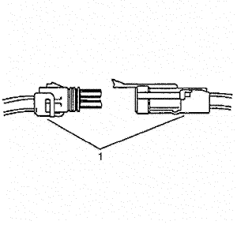
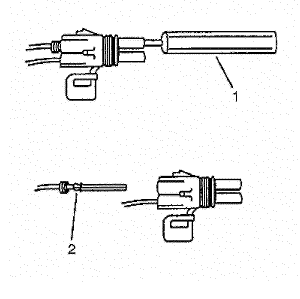

Conectores Delphi — Weather Pack
Herramientas especiales
| • | EL-38125-580 Juego de herramientas de liberación de terminales |
| • | Herramienta de liberación de terminales J-38125-10A |
Si desea informarse sobre herramientas regionales equivalentes, consultar Herramientas especiales .
Procedimiento de extracción de terminales
A continuación, se muestra el procedimiento correcto para la reparación de conectores Weather Pack®.

- Separe las mitades de los conectores (1).
- Abra el bloqueo secundario. Un bloqueo secundario ayuda a la retención del terminal y normalmente está unido por moldeo al conector (1).
- Sujete el cable y empuje el terminal hasta la posición más hacia delante. Sujete el cable en esta posición.

- Introduzca la herramienta J-38125-10A para la extracción de terminales Weather Pack® en la parte delantera (extremo coincidente) de la cavidad del conector hasta que descanse en el reborde de la cavidad (1).
- Tire con cuidado del cable para extraer el terminal a través de la parte trasera del conector (2).
Nota: Nunca utilice la fuerza para extraer un terminal de un conector.
- Compruebe que el terminal y el conector no están dañados. Repárelos si es necesario. Consultar Reparaciones del terminal del conector .
- Restaure la forma de la espiga de bloqueo (2) y vuelva a colocar el terminal en el cuerpo del conector.
- Cierre los bloqueos secundarios y una las mitades de conector.
- Compruebe que el circuito está completo y funciona correctamente.
- Realice una comprobación del sistema.
- Repare el terminal siguiendo el procedimiento Reparaciones del terminal del conector .
- Vuelva a insertar el terminal reparado en la cavidad. Repita el procedimiento de diagnóstico para verificar la reparación y vuelva a conectar los cuerpos de conector.
| © Copyright Chevrolet. All rights reserved |